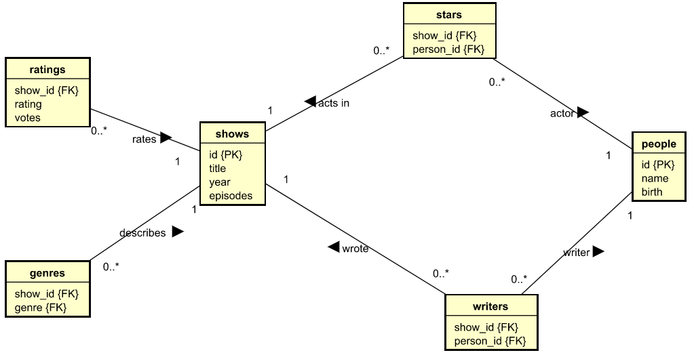
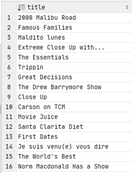
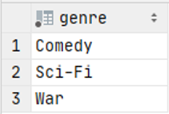

- 1 Simple IMDB Exercises
- 2 Exercise 1
- 3 Exercise 2
- 4 Exercise 3
- 5 Exercise 4
- 6 Exercise 5
- 7 Exercise 6
- 8 Exercise 7
- 9 Exercise 8
- 10 Exercise 9
- 11 Exercise 10
- 12 Exercise 11
Simple IMDb Exercises
In these exercises we will use a new data set about a subset if the IMDb database.
You must first import this data set. Download the ddl file from here:
You must import this by running the ddl code, like this:

Right click on your schema folder, and select the "SQL Scripts" --> "Run SQL Script...".
This should import a new schema, the simple_imdb.
Then, you must import data. Download the data her:
And then run it, in the same way as before. You should now have a "simple_imdb" schema with data. Verify this.
The below is a Global Relations Diagram to get an overview of the database:

On the following slides, you will be asked questions, which must be answered by querying the simple_imdb database.
All questions can be answered with a single sql statement (consider this a challange), but sometimes it is easier to do multiple statements.
For most questions, you can also find the answer as a hint. Do give it a serious try first, before you look at the answer.
Proposed sql solutions are also available and are hidden as well.
Exercise 1
What is the name of the person with id 103?
Show answer

Show SQL
SELECT name FROM people WHERE id=103;
Exercise 2
How many people has the name 'Jennifer'?
Show answer

Show SQL
SELECT COUNT(*)
FROM people
WHERE name LIKE '%Jennifer%';
Exercise 3
How many people were born in 1967?
Show answer
Show SQL
SELECT COUNT (*)
FROM people
WHERE birth = 1967;
Exercise 4
How many writers were born in 1967?
Show answer

Show SQL
SELECT COUNT (*)
FROM people
WHERE birth = 1967
AND Id IN (
SELECT person_id
FROM writers
)
;
Exercise 5
How many episodes does the show 'The Young and the Restless' have?
Show answer
Show SQL
SELECT title, episodes
FROM shows
WHERE title = 'The Young and the Restless'
ORDER BY episodes DESC;
Exercise 6
Which shows has 'Drew Barrymore' starred in?
Show answer

Show SQL
SELECT title
FROM stars,
shows
WHERE person_id IN (
SELECT id
from people
where name = 'Drew Barrymore'
)
AND show_id = id
;
Exercise 7
What are the genres of 'Voltz'?
Show answer

Show SQL
SELECT genre
FROM genres, shows
WHERE genres. show_id = shows.id
AND title = 'Voltz';
Exercise 8
List the names of the stars of 'The Young and the Restless'
Show answer
Show SQL
SELECT name
FROM stars,
people
WHERE person_id = id
AND show_id = (
SELECT id
FROM shows
WHERE title = 'The Young and the Restless'
)
;
Exercise 9
What is the title and rating of the highest rated show(s)?
Show answer

Show SQL
SELECT title, rating
FROM ratings,
shows
WHERE Show_id = id
AND rating = (
SELECT MAX (rating)
FROM ratings
)
;
Exercise 10
Which people are both stars and writers?
Show answer

Show SQL
-- Use distinct to remove duplicate rows
SELECT DISTINCT name
FROM stars,
writers,
people
WHERE stars.person_id = id
AND writers.person_id = id
;
Exercise 11
List the names of both stars and writers of 'The Young and the Restless
Show answer

Show SQL
-- Didn't manage to make a join work
SELECT DISTINCT name
FROM people
-- This where finds filters by the people(id) being in a set
WHERE id IN (
-- This select find the stars (person_id) of the show with a specific id
SELECT person_id
FROM stars
WHERE show_id = (
-- This select find the id of the show
SELECT id
FROM shows
WHERE title = 'The Young and the Restless'
)
)
OR id IN (
SELECT person_id
FROM writers
WHERE show_id = (
SELECT id
FROM shows
WHERE title = 'The Young and the Restless'
)
)
;